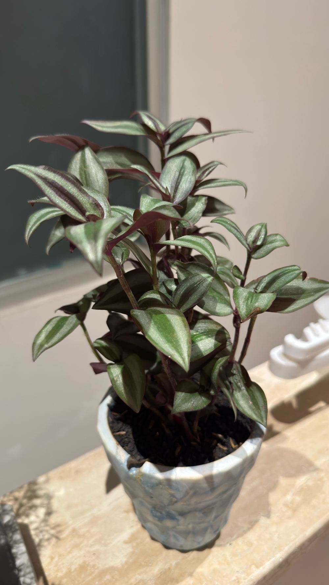

01
Tradescantia zebrina
Fam. Commelinaceae
Wandering Jew
Daun bergaris perak-hijau dengan bagian bawah keunguan, tumbuh merunduk/menjuntai.
- Cahaya
- Terang tidak langsung — sedikit sinar pagi membuat warna makin cerah
- Air
- Siram saat lapisan atas tanah sudah kering
Catatanrutin dipotong ujungnya biar rimbun, gampang diperbanyak lewat stek batang.
Cara merawat Wandering Jew, lengkap →